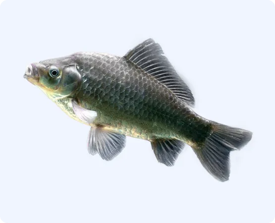

Рыба для пруда
Карась серебряный
Цена и наличие
- 4-6 см0,7 BYN / шт.В наличии
- 6-10 см1 BYN / шт.В наличии
- 10-15 см1,3 BYN / шт.В наличии
Данные на 23.11.2026.
Характеристики
- Внешний вид
- Отличается от золотого более крупной и светлой чешуёй и меньшей высотой тела
- Сезонность
- Круглый год
- Возраст
- Сеголетки, годовики
- Максимальный вес
- До 3 кг
- Продолжительность жизни
- Обычно 10–12 лет, при этом зарегистрированы отдельные особи возрастом до 14 лет. Продолжительность жизни зависит от кормовой базы, плотности рыбы и условий конкретного водоема
- Половая зрелость
- В условиях умеренного климата обычно наступает в возрасте 2–4 лет, в Беларуси чаще примерно в 3–4 года. При хорошей кормовой базе и быстром росте отдельные особи способны созревать уже на втором году жизни
- Питается
- Серебряный карась — всеядная рыба. В рацион входят зоопланктон, личинки насекомых, черви, моллюски и другие донные беспозвоночные, а также водоросли, мягкие части растений и органический детрит. Основную часть пищи рыба собирает в толще воды и возле дна
- Температура воды для активного питания и размножения
- Наиболее активно питается и растет в теплой воде примерно при 18–28 °C, причем у молоди наиболее быстрый рост отмечается примерно при 25–28 °C. Нерест начинается после весеннего прогрева воды примерно до 12–16 °C и может продолжаться при дальнейшем повышении температуры до 18–22 °C
- Условия пруда для содержания
- Хорошо подходит стоячий или медленно проточный пруд с мягким дном, мелководными участками и водной растительностью. Серебряный карась очень вынослив, способен переносить мутную воду, значительные колебания температуры и сравнительно низкое содержание кислорода. Для стабильного роста желательно сохранять нормальный кислородный режим и не допускать чрезмерного загрязнения водоема
- Рост
- Сеголетки 5-15 г, двухлетки 20-50 г, трехлетки 50-100 г
Описание
Самый распространенный обитатель прудов и частый выбор покупателей.
УСЛОВИЯ ОБИТАНИЯ
Карась серебряный (Carassius gibelio) — неприхотливая пресноводная рыба семейства карповых. Он хорошо приспособлен к жизни в прудах, озерах, каналах, старицах и медленно текущих реках. Предпочитает спокойные водоемы с участками подводной и прибрежной растительности и мягким илистым или песчано-илистым дном. Серебряный карась отличается высокой устойчивостью к неблагоприятным условиям. Он значительно лучше большинства прудовых рыб переносит временный недостаток кислорода, помутнение воды и резкие изменения условий среды. Поэтому способен успешно жить даже в небольших водоемах, где более требовательные виды чувствуют себя плохо. Несмотря на высокую выносливость, для хорошего роста желательно поддерживать нормальное качество воды. Аэрация особенно полезна летом при высокой плотности рыбы и зимой под длительным ледяным покровом. Большое количество разлагающейся органики и постоянный тяжелый дефицит кислорода нежелательны даже для карася. Серебряный карась хорошо уживается с карпом, линем, белым амуром и другими мирными прудовыми рыбами. При совместном содержании со щукой, сомом или крупным окунем молодые караси становятся естественной кормовой базой для хищников. Важная особенность этого вида — способность быстро увеличивать численность. При отсутствии хищников серебряный карась может сильно размножиться, из-за чего возникает высокая конкуренция за корм и большое количество мелкой, медленно растущей рыбы.
РАЗМНОЖЕНИЕ
Серебряный карась обычно достигает половой зрелости в возрасте 2–4 лет. В условиях Беларуси чаще это происходит примерно на третьем-четвертом году жизни, хотя при хорошем росте отдельные особи способны созревать раньше. Нерест начинается весной после прогрева воды примерно до 12–16 °C и может продолжаться длительное время. Обычно карась нерестится несколькими порциями с весны до начала или середины лета. Для размножения рыбы выбирают хорошо прогреваемые мелководные участки с густой водной растительностью. Икра клейкая и прикрепляется к стеблям, листьям и другим подводным растениям. Родители после нереста икру не охраняют. Благодаря высокой плодовитости и продолжительному нерестовому периоду серебряный карась способен очень быстро формировать многочисленную популяцию. У серебряного карася существует необычный способ размножения — гиногенез. У некоторых популяций преобладают самки, а сперма самцов других близких карповых рыб запускает развитие икры, при этом их генетический материал обычно не включается в потомство. В результате появляются преимущественно генетически сходные с матерью особи. При этом серебряный карась не является исключительно «самочным» видом. Существуют также популяции с самцами и обычным половым размножением. Поэтому наличие самцов серебряного карася в пруду является нормальным явлением. В подходящем пруду серебряный карась легко размножается самостоятельно. Если необходимо контролировать его численность, особенно важно не допускать чрезмерного зарастания мелководий и при необходимости использовать подходящих хищных рыб.
Кормление
Серебряный карась всеяден и использует практически все доступные типы естественного корма. Молодь активно питается зоопланктоном, мелкими ракообразными и личинками насекомых. По мере роста возрастает доля донных беспозвоночных, растительного материала и детрита. Взрослые караси активно исследуют дно, собирая личинок насекомых, червей, моллюсков и другую донную живность. Одновременно они употребляют водоросли, мягкие части растений и различные органические частицы. В биологически развитом пруду серебряный карась способен существовать преимущественно за счет естественной кормовой базы. Если требуется ускоренный рост, можно использовать гранулированный корм для карповых рыб, а также обычные прудовые полнорационные корма. Наиболее активно карась питается в теплое время года. Хороший рост наблюдается примерно при 18–28 °C, а у молоди максимальная скорость роста может наблюдаться при 25–28 °C. При осеннем охлаждении воды аппетит постепенно уменьшается. Перекармливать карася не следует. Несъеденный корм увеличивает количество органики, ухудшает качество воды и способствует заиливанию. Особенно это важно в небольших водоемах с высокой плотностью рыбы.
Зимовка
Серебряный карась хорошо приспособлен к холодному климату и без проблем зимует в открытом пруду в условиях Беларуси, если водоем не промерзает полностью и не возникает длительного тяжелого замора. При снижении температуры активность и интенсивность питания резко уменьшаются. Рыба собирается на более глубоких участках и проводит большую часть зимы возле дна. В холодной воде кормление обычно прекращают или значительно сокращают в зависимости от активности рыбы. Серебряный карась способен переносить значительно более низкое содержание кислорода, чем большинство прудовых рыб. Эта особенность позволяет ему выживать в небольших стоячих водоемах и под длительным ледяным покровом. Однако его устойчивость к кислородному дефициту не безгранична. Для надежной зимовки желательно иметь непромерзающий глубокий участок и не допускать чрезмерного накопления отмирающей растительности, листьев и другой органики. В небольшом, сильно заиленном или плотно зарыбленном пруду зимняя аэрация значительно уменьшает риск замора. При правильно организованном водоеме серебряный карась является одним из наиболее неприхотливых видов рыб для круглогодичного содержания в пруду.